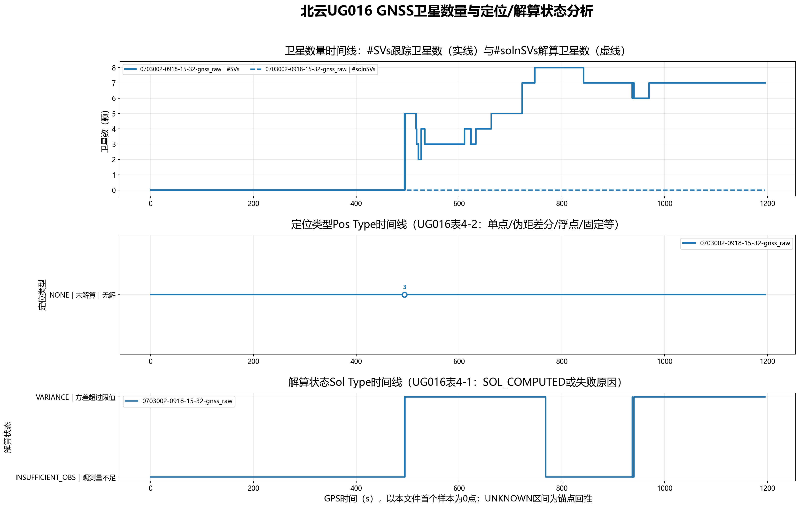
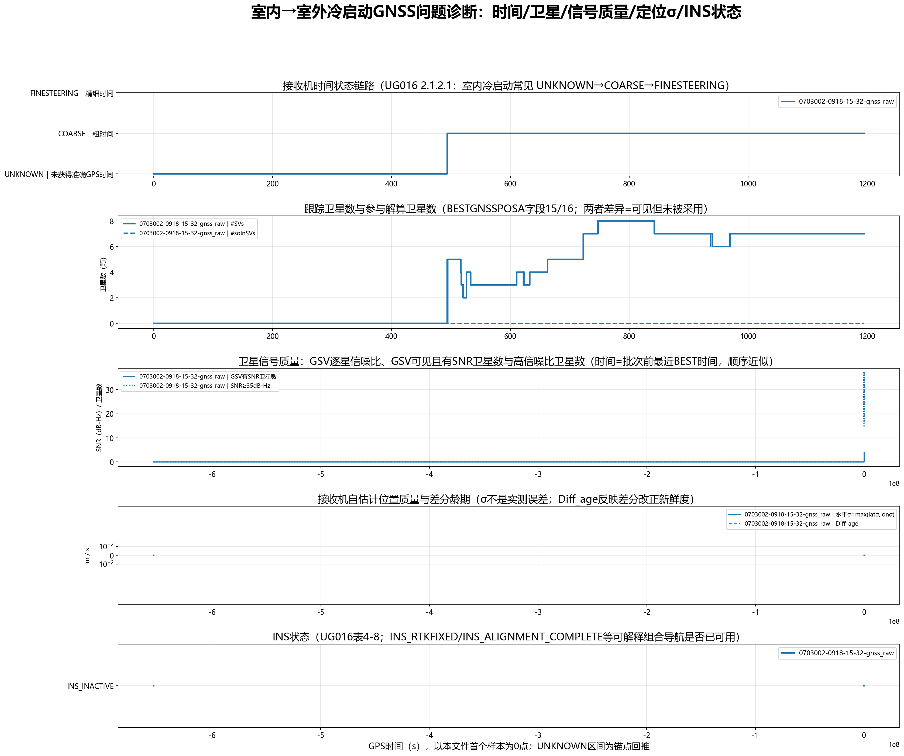
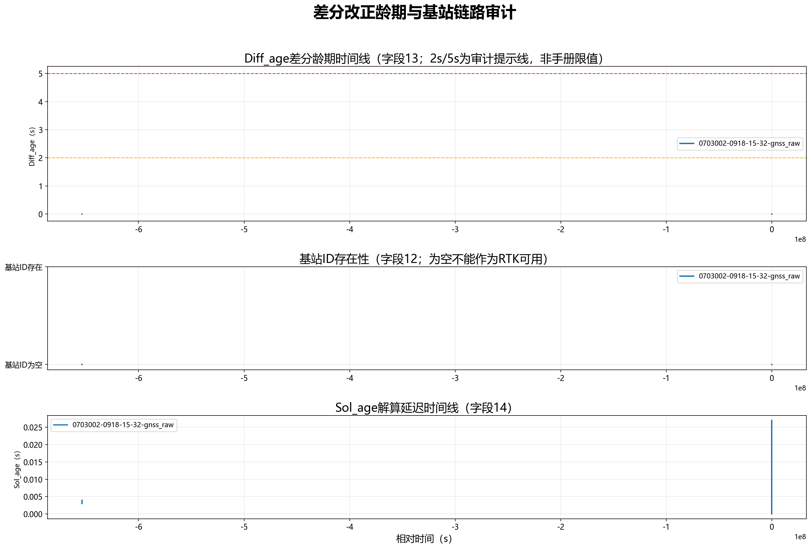

图中编号对应第3节关键事件。PNG原始分辨率3600×2250像素。
| 文件 | 定位源 | 有效时间轴样本 | 校验通过报文 | 目标报文CRC失败候选 | 起始时间 | 结束时间 | 跨度s | 中位周期s | #SVs范围 | #solnSVs范围 |
|---|---|---|---|---|---|---|---|---|---|---|
| 0703002-0918-15-32-gnss_raw.txt | BESTGNSSPOSA | 11954 | 11954 | 0 | GPS 2436周 458093.500s | GPS 2436周 459288.800s | 1195.300 | 0.100 | 0~8 | 0~0 |
| 编号 | 文件 | 事件 | GPS时间 | 主要事件 | 依据/现场值 |
|---|---|---|---|---|---|
| 1 | 0703002-0918-15-32-gnss_raw.txt | 首次定位类型NONE | GPS 2436周 458093.500s | 否 | UG016表4-2：未解算；#SVs=0，#solnSVs=0。 |
| 2 | 0703002-0918-15-32-gnss_raw.txt | 首次解算状态INSUFFICIENT_OBS | GPS 2436周 458093.500s | 否 | UG016表4-1：观测量不足。 |
| 3 | 0703002-0918-15-32-gnss_raw.txt | 首个非UNKNOWN时间状态：COARSE | GPS 2436周 458587.300s | 是 | UG016 2.1.2.1标准ASCII头字段6；其后的UNKNOWN样本按锚点回推。 |
| 4 | 0703002-0918-15-32-gnss_raw.txt | 首次时间状态COARSE | GPS 2436周 458587.300s | 否 | UG016 2.1.2.1标准ASCII头字段6。 |
| 5 | 0703002-0918-15-32-gnss_raw.txt | 首次解算状态VARIANCE | GPS 2436周 458587.300s | 否 | UG016表4-1：方差超过限值。 |
| Pos Type | 样本数 | 占比 | 含义/工程分组 |
|---|---|---|---|
| NONE | 11954 | 100.00% | NONE｜未解算｜无解 |
| Sol Type | 样本数 | 占比 | 含义 |
|---|---|---|---|
| INSUFFICIENT_OBS | 6654 | 55.66% | INSUFFICIENT_OBS｜观测量不足 |
| VARIANCE | 5300 | 44.34% | VARIANCE｜方差超过限值 |
| Time Status | 样本数 |
|---|---|
| COARSE | 7016 |
| UNKNOWN | 4938 |
#SVs=跟踪卫星数，字段16 #solnSVs=解算卫星数，字段17/18为L1/E1/B1与多频解算卫星数。缺少BESTGNSSPOSA时回退到4.2.1 BESTPOS同序字段。#chans为硬件通道数量，通道数不是卫星数，因此不用它统计卫星颗数。
GSV报文自身没有GPS周/周内秒字段，图中GSV时间采用同一完整批次前最近BESTGNSSPOSA头时间，为顺序近似，已在坐标与说明中标注。

Diff_age=UG016 4.2.2字段13，单位s；Sol_age=字段14；基站ID=字段12。2s/5s只是工程审计提示线，不是手册限值。
| 文件 | 样本数 | 基站ID | 基站ID为空样本 | Diff_age最小s | Diff_age中位s | Diff_age P95s | Diff_age最大s | >2s样本 | >5s样本 | >10s样本 | Sol_age最小s | Sol_age最大s |
|---|---|---|---|---|---|---|---|---|---|---|---|---|
| 0703002-0918-15-32-gnss_raw.txt | 11954 | [] | 11954 | 0.000 | 0.000 | 0.000 | 0.000 | 0 | 0 | 0 | 0.000 | 0.027 |
| 文件 | AGE/差分链路结论 |
|---|---|
| 0703002-0918-15-32-gnss_raw.txt | BESTGNSSPOSA中的Diff_age全部为0或缺失，且无有效基站ID：当前日志不能证明RTK差分改正曾被接收。 |
| 0703002-0918-15-32-gnss_raw.txt | 基站ID为空：当前日志未体现有效差分基准站。 |
| 0703002-0918-15-32-gnss_raw.txt | Diff_age最大值未超过2s：从龄期看没有长时间差分改正失效。 |
| 0703002-0918-15-32-gnss_raw.txt | 基站ID为空的样本11954条，通常对应单点/无解状态，不能作为RTK可用。 |
| 文件 | 诊断线索（工程判断，非唯一根因） |
|---|---|
| 0703002-0918-15-32-gnss_raw.txt | UNKNOWN时间状态4938条：尚未获得准确GPS时间，可能来自室内冷启动初期或时间失效。 |
| 0703002-0918-15-32-gnss_raw.txt | 存在COARSE时间状态：时间已粗同步但尚未到FINESTEERING。 |
| 0703002-0918-15-32-gnss_raw.txt | 未出现伪距差分/浮点/固定解；在当前日志内GNSS链路停留在单点或无解，需检查基站数据链路、改正龄期与接收机RTK配置。 |
| 0703002-0918-15-32-gnss_raw.txt | GSV可见且有SNR的卫星中，SNR≥35dB-Hz的批次均值占比约4.1%；低占比通常提示遮挡、多径或天线/前端问题，但GSV不能唯一区分这三类原因。 |
| 0703002-0918-15-32-gnss_raw.txt | 跟踪到卫星但参与解算数为0的样本7015条：接收机已看见部分信号，但观测量/几何/内部质量控制不足以形成位置解。 |
| 0703002-0918-15-32-gnss_raw.txt | 出现VARIANCE解算状态：解算方差超过限值，需结合卫星数、信号质量与接收机自估计σ继续排查。 |
| 0703002-0918-15-32-gnss_raw.txt | 出现INSUFFICIENT_OBS：观测量不足，是室内弱信号/遮挡场景的直接线索。 |